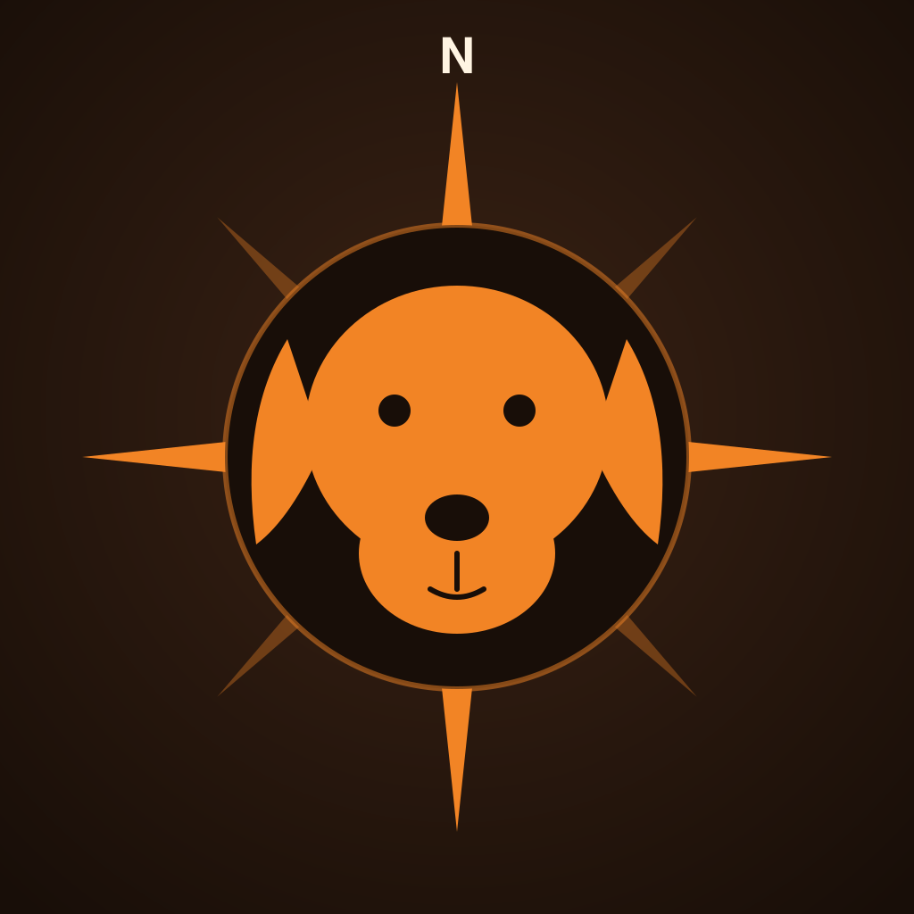

iOS Offline NavigationTrackHound
One offline nav engine, tuned to how you actually drive or ride. Pick Fastest for the commute, Curviest for Sunday roads, or Unpavediest for dirt and gravel — then make it your own. Routing runs entirely on your iPhone, so it keeps working with no signal.
Now on the App Store for iPhone and CarPlay — route planning is free.